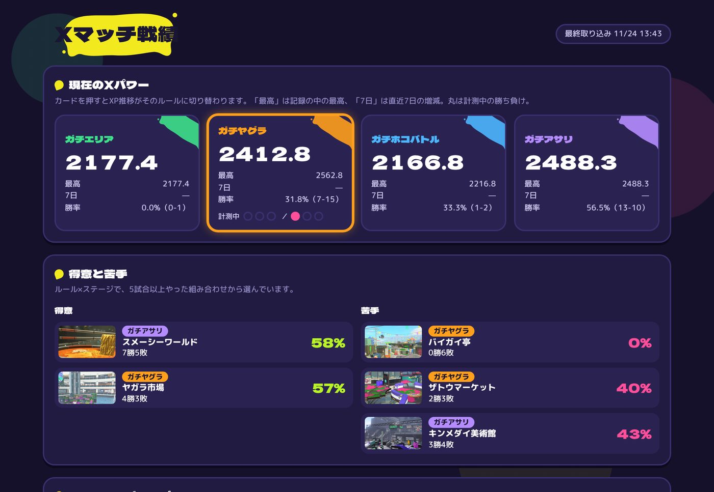
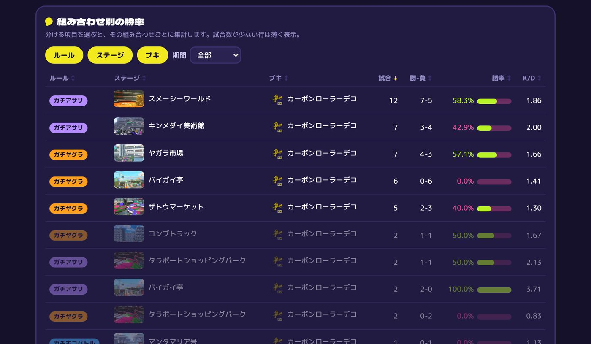
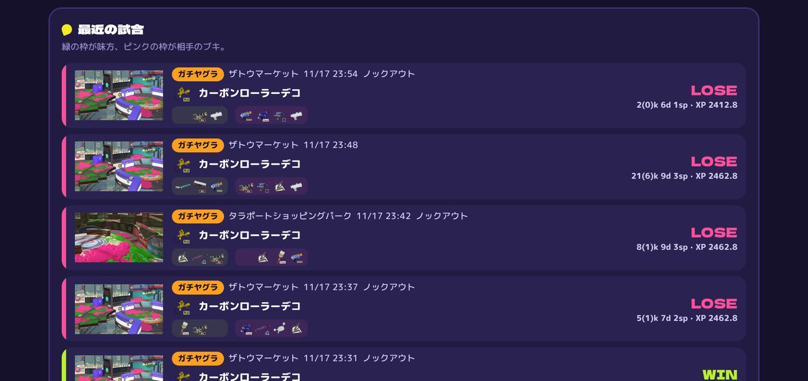
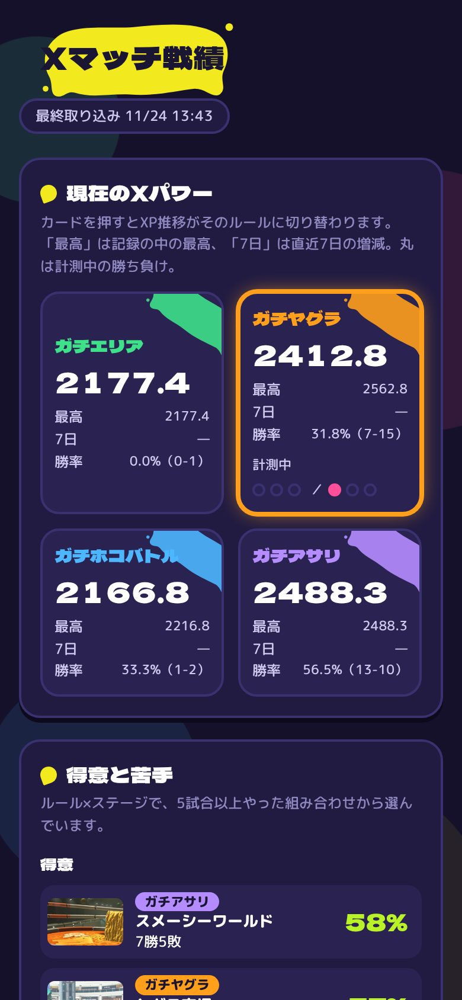

Xマッチ戦績
スプラトゥーン3の X マッチの戦績を毎日自動で取り込み、1枚のページにまとめるツールです。 イカリング3（Nintendo Switch Online アプリ）は直近 50 試合しか残らず、ルールやステージごとの勝率も見られないので、 s3s で書き出した試合データを手元に溜めていき、 XP の推移、どのルール×ステージが得意か、味方と相手にどのブキがいると勝ちやすいかを見られるようにしました。




POINTS
毎朝の自動取り込み
PC のタスクで毎日 5 時に、nxapi で鍵を更新 → s3s で書き出し → X マッチだけを取り出して追記 → ページを作り直す、までを一度に行う。50 試合の上限を気にせず記録が溜まっていく。
1 ファイルで開ける
集計に使う項目だけに絞ったデータをページに埋め込むので、サーバーなしでダブルクリックで開ける。イカリングの画像 URL は期限つきなので、取り込みのときに画像も保存する。
見たい切り口から作る
「このステージのヤグラは本当に苦手なのか」「どのブキが味方にいると勝てるか」を確かめたくて、組み合わせを選んで集計する表と、7 人のブキの登場数・勝率の表を作った。
公開しても困らない形に
ログインの鍵はリポジトリに入れず、公開するページには試合 ID（アカウントの ID を含む）の代わりに通し番号だけを載せる。
GUIDE — 自分の戦績で作る
Windows・Mac・Linux の PC で動きます。コマンドを打つ画面（Windows は「ターミナル」や PowerShell、Mac は「ターミナル」）を使います。30 分ほど見ておいてください。
はじめに確認
- 非公式のツールです。 任天堂のアプリが使っている仕組みを s3s・nxapi で真似して戦績を取っています。任天堂は認めておらず、過去にはイカリング3に入れなくなったアカウントの報告もあります。自己責任で使ってください。
- 鍵の作成に外部のサーバーを使います。 任天堂の認証に必要な値を作るため、nxapi が開発者のサーバー（nxapi-znca-api）にログイン時のトークンを送ります（説明）。
- ログインで作る
session_tokenはパスワードと同じです。 人に渡したり、GitHub に上げたりしないでください（secrets/は最初から GitHub に上がらない設定です）。 - イカリング3には直近 50 試合しか残りません。 1 日に 50 試合以上やる日は、取り込みを 1 日 2 回以上にしてください。
手順
-
必要なものを用意する
-
ツールと s3s をダウンロードする
好きな場所でターミナルを開き、次を順に打ちます。ここから先は、すべて
xmatch-sensekiフォルダの中で打ちます。git clone https://github.com/koyomivanp/xmatch-senseki cd xmatch-senseki git clone https://github.com/frozenpandaman/s3s -
s3s を動かす準備をする
s3s 専用の Python 環境（venv）を作り、必要なライブラリを入れます。
Windowspy -m venv s3s\.venv s3s\.venv\Scripts\pip install -r s3s\requirements.txtMac / Linuxpython3 -m venv s3s/.venv s3s/.venv/bin/pip install -r s3s/requirements.txt -
nxapi を入れる
s3s がイカリングに入るための鍵（gtoken / bulletToken）は、毎回 nxapi で作り直します。
mkdir nxapi cd nxapi npm init -y npm install nxapi cd .. -
入っている作者の戦績を消す
data/とapp/img/には見本として作者の戦績が入っています。混ざらないように最初に消します。Windows（PowerShell）Remove-Item data\*.json Remove-Item -Recurse app\imgMac / Linuxrm data/*.json rm -rf app/img -
Nintendo アカウントでログインする
ログイン用の URL を出します。
Windowss3s\.venv\Scripts\python tools\login.py urlMac / Linuxs3s/.venv/bin/python tools/login.py url出てきた URL をブラウザで開いてログインし、アカウントを選ぶ画面の 「この人にする」ボタンを右クリック →「リンクのアドレスをコピー」します（
npf71b963c1b7b6d119://auth#…で始まる文字列）。それを"で囲んで次のように渡します。Windowss3s\.venv\Scripts\python tools\login.py token "コピーしたリンク"Mac / Linuxs3s/.venv/bin/python tools/login.py token "コピーしたリンク"saved session_tokenと出れば成功です。鍵はsecrets/session_token.txtに、s3s の設定（stat.ink には送らない・日本語）はs3s/config.txtに保存されます。 -
取り込んでページを作る
python tools/daily.py # Windows は py tools\daily.py数分かかります。
ok: X battles total 50のように出たら完成です。app/index.htmlをダブルクリックすると、自分の戦績のページが開きます。結果はlogs/daily.logにも残ります。 -
毎日自動で取り込む
手順 7 のコマンドを 1 日 1 回動かすだけです。PC が起きている時間に合わせてください。
- Windows — 「タスク スケジューラ」→「基本タスクの作成」で毎日の時刻を決め、操作は「プログラムの開始」。プログラムに
py、引数にtools\daily.py、開始にxmatch-sensekiフォルダの場所を入れる。 - Mac / Linux —
crontab -eで次の 1 行を足す（nodeの場所はwhich nodeで確認し、PATH に入れる）。
0 5 * * * cd ~/xmatch-senseki && PATH=/usr/local/bin:$PATH python3 tools/daily.py - Windows — 「タスク スケジューラ」→「基本タスクの作成」で毎日の時刻を決め、操作は「プログラムの開始」。プログラムに
-
（任意）ネットに公開する
GitHub Pages などのリポジトリをクローンしたフォルダを環境変数
XMATCH_SITEに入れておくと、取り込みのたびにその中のxmatch/にページと画像をコピーして push します。公開するページに載るのは自分と味方・相手のブキ名、ステージ、勝敗、XP などで、プレイヤー名やアカウントの ID は載りません。
困ったとき
- 「nxapi で鍵を更新できませんでした」と出る
- しばらく使わないうちにログインが切れたか、Nintendo Switch Online アプリの更新で古くなった可能性があります。
cd nxapi→npm install nxapi@latestで nxapi を新しくし、それでもだめなら手順 6 のログインをやり直してください。nodeが見つからない場合は Node.js が入っているか確認します。 - 「s3s の書き出しに失敗」と出る
git -C s3s pullで s3s を新しくし、pip install -r s3s/requirements.txt（手順 3 の 2 行目）をもう一度実行してください。- 試合が抜けている
- イカリング3には直近 50 試合しか残らないので、取り込みの間にそれ以上やった分は取れません。取り込みの回数を増やしてください。
- XP の推移が「まだ点が足りません」
- XP は計測（3 勝か 3 敗）が終わるたびに変わるので、計測を 1 回終えると線が出ます。